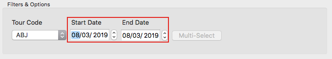

Filter by date
Filter by date
Filter by Date
Filtering your results to capture a date range.
When creating price grids, you don't always want to included every departure that has been pulled from traveller. Examples of this might include:
- You're working on a tactical brochure and only need dates that cover the next couple of months
- The firs few dates in the preview panel are sold out
- You're working on a main launch brochure that only requires dates for next year
To do this, start by selecting the tour code that you require.
When the view updates, look to the right of the control you just used; there are two date select controls. One of these is for the start tade of your brochure, the other for the end date. You can either type into them directly or use the 'spinners' to the side to change the date in the field one number at a time.

As you change the dates in the boxes, you will notice that the data in the preview panel changes to reflect your selected date range. Your single supplement and deposit values may also change to reflect the new range of prices.